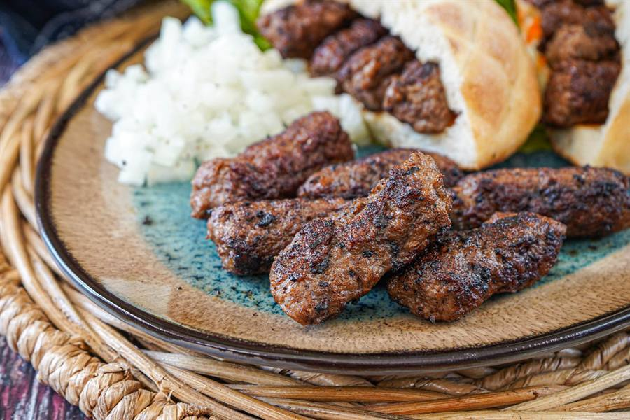
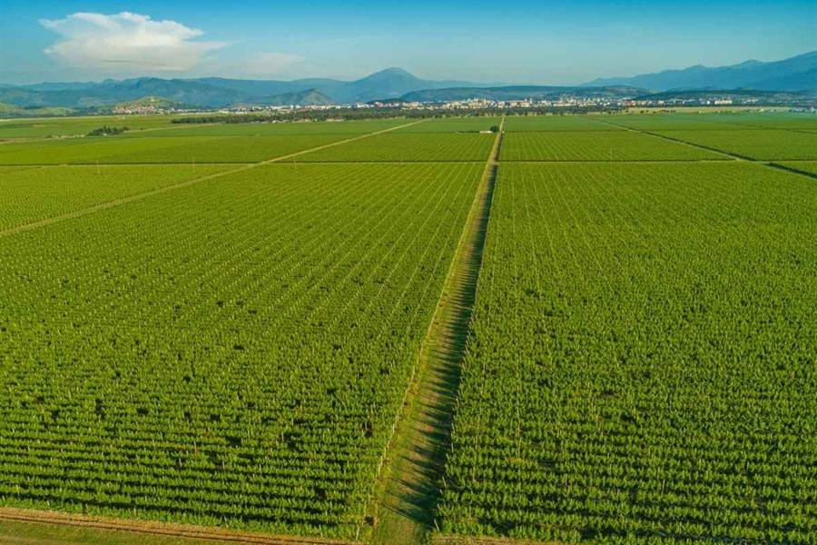

Montenegro Food & Wine Guide 2026: Pršut, Cheese, Vranac & Olive Oil
Two cuisines in one country. The coast is Mediterranean — grilled fish, octopus, buzara shellfish, black risotto with cuttlefish ink. The mountains are Balkan-hearty — lamb under the iron bell, smoked ham, sheep cheese, and the soft, sour, addictive thing called kačamak. The wines you have not heard of (Vranac, Krstač) are excellent. The olive oil from Luštica is some of the cleanest in the eastern Adriatic.

What to eat in Montenegro
Two completely different food regions in one tiny country. Both are real, both are good. Order what each region does best rather than chasing one universal national dish.
Coastal Mediterranean classics
- Riba na žaru — grilled fish sold by weight (€40–60/kg for sea bass or sea bream).
- Buzara — shellfish (mussels, scampi, clams) cooked in white wine, garlic, parsley, breadcrumbs. The dish to order at a good konoba.
- Crni rižoto — black risotto with cuttlefish ink.
- Brodet — Adriatic fish stew with polenta.
- Octopus salad — boiled octopus with potatoes, capers, olive oil and lemon.
- Pizza — taken seriously, often very good. Italian influence runs deep here.
Mountain Balkan classics
- Lamb ispod sača — lamb (sometimes veal) slow-cooked under an iron bell with potatoes. Order ahead at mountain restaurants.
- Kačamak — cornmeal porridge baked with cream and cheese until brown.
- Pršut — dry-cured cold-smoked ham. The Njeguši version is the famous one.
- Njeguški sir — sheep cheese aged in olive oil.
- Kajmak — fermented clotted-cream cheese, served as a side with everything.
- Cicvara — cornmeal with kajmak and cheese, the mountain breakfast.
Everyday classics
- Burek — flaky pastry with cheese or meat. The breakfast of bus stations and bakeries.
- Ćevapi — small grilled minced-meat sausages served with raw onion and flatbread. €5–9/portion.
- Pljeskavica — the bigger flat burger version.
- Palačinke — pancakes, sweet or savoury, snack of choice.
Pršut and Njeguški Cheese — visiting the source
Njeguši is a mountain village at 900 m on the slopes of Mount Lovćen, halfway between Cetinje and Kotor. Fewer than 200 residents. It produces the country's most famous ham (njeguški pršut) — salted, cold-smoked over beechwood and laurel, aged in attics that catch the cold sea breeze through the Lovćen pass. The cheese is sheep's milk, aged in olive oil. Visiting:
- No formal booking — drive or take a tour up the famous Kotor–Cetinje serpentine (25 hairpin bends). Ask at any roadside stall and someone will show you a smokehouse. Customary to buy 200 g of pršut and a slice of cheese afterward.
- Organised tour: Montours offers a private Cetinje + Njeguši Prosciutto and Cheese Tasting Tour from €300/vehicle.
- Farm-to-table: Kotor Private Tours runs intimate visits to family smokehouses like Vido's.
- Roadside lunch: Restoran Horizont or Nevjesta Jadrana — Njeguši classics with the bay view.
Vranac, Krstač and the cellar under a Yugoslav runway

Vranac is the local red — almost ink in the glass, smoky, full-bodied. Krstač is the crisp local white. Rakija is the brandy: grape (loza), plum (šljiva), honey (medovača).
Plantaže — the major producer
2,300 hectares around Podgorica — Europe's largest single vineyard. The remarkable bit: their Šipčanik wine cellar is a former Yugoslav military aircraft tunnel converted into one of Europe's most atmospheric cellars. Tours include 4–6 tastings, 90–120 minutes. Book ahead in summer.
Family wineries — Crmnica valley around Virpazar
- Mašanović — Limljani village, atmospheric stone-village setting with terraced vineyards.
- Pajović — handcrafted Vranac, generations-old, very personal cellar visit.
- Sjekloća — strong reputation, advance booking essential.
Tastings with food €15–30/person. Direct booking by phone or WhatsApp, sometimes via guesthouses in Virpazar.
Combined tour
Wine of Montenegro runs a Plantaže Šipčanik + Skadar Lake boat-cruise day tour for €135/person including hotel pickup, English-speaking guide, lake-park entry, wine and bruschetta tasting.
Olive oil — Luštica family farms
Luštica's olive groves include trees that are 500+ years old. Several family farms cold-press their own oil:
- Morić Olive Groves — the only certified organic olive oil producer in Montenegro, 10 minutes from Luštica Bay. Tastings, oil and olive sales, family meals by reservation. Visit lustica.me.
- The Old Mill (Jovan's family) — 300-year-old farm, one of the last working olive presses on the peninsula. Tastings of oil, pršut, cheese, brandy and wine. €60–120/person via ToursByLocals or byfood.com.
- Stara Maslina, Bar — Europe's oldest olive tree, said to be 2,200 years old. Pilgrim spot rather than tasting venue. Combine with Stari Bar visit.
Rakija — the spirit you should respect
Rakija is hospitality, chemistry and a small lesson in restraint, all in one tiny glass. Homemade strength is unpredictable — 40 to 60% ABV is normal, some village versions go higher. Common varieties: loza (grape, the default), kruška (pear), šljiva (plum, the Balkan classic), medovača (honey), maginjaca (strawberry tree, Luštica specialty). Sip, do not gulp. Never treat a refill as obligatory.
Where to eat — verified konobas on the bay
| Place | Town | What for | Per person |
|---|---|---|---|
| Mala Barka · Kalimanjska 2 | Tivat | Fresh seafood waterfront | €15–25 |
| Divino · Šetalište kapetana Iva Vizina 3 | Tivat | Mediterranean, sea view | €20–40 |
| Vino Santo | Tivat | Modern Adriatic, Chef Dragan Pej | €25–45 |
| Konoba Grispolis | Bigova | Old fishing village konoba | €20–35 |
| Konoba Boka Bay · +382 67 202 642 | Prčanj | Family-run waterside dinner | €18–30 |
| Restoran Hotel Pine | Tivat | Locals' choice, Pine Pita dessert | €15–25 |
| Cafe del Capitano | Perast | Coffee + light lunches | €8–15 |
| Stari Most | Rijeka Crnojevića | Lake carp, river view | €18–35 |
| Galion | Kotor (inside walls) | Sea view inside the old town | €25–50 |
| Restoran Horizont | Njeguši | Mountain food + bay view | €15–30 |
What to bring home — the food shortlist
- Olive oil from Morić or a small Luštica farm — €10–25/bottle.
- Honey from roadside stalls (acacia, sage, chestnut) — €8–15.
- Vranac wine — one Plantaže Pro Corde or one family-winery bottle.
- Rakija in a flat hip-flask bottle — easy to pack.
- Vacuum-packed njeguški pršut + a slice of cheese. Check your country's customs rules.
- Lavender bags and soaps from market stalls — small, lovely, cheap.
Frequently asked questions
What food should you try in Montenegro?
Coast: grilled fish, buzara, black risotto. Mountains: lamb ispod sača, kačamak, pršut, sheep cheese. National classics: ćevapi, pljeskavica, burek for breakfast.
What is njeguški pršut?
A dry-cured cold-smoked ham from Njeguši village. Pork salted, cold-smoked over beechwood with mountain herbs, aged in attics. Intensely smoky, eaten thinly sliced with cheese.
What is Vranac wine?
Montenegro's signature red grape — almost ink-coloured, smoky and full-bodied. Plantaže near Podgorica is the largest producer; family wineries around Virpazar make smaller artisanal versions.
Where can I do a wine tasting?
Plantaže Šipčanik wine cellar (the spectacular large-scale option). Family wineries in the Crmnica valley around Virpazar — Mašanović, Pajović, Sjekloća — €15–30/person. Combined Skadar Lake boat + winery tour €135/person via Wine of Montenegro.
Where to buy authentic Montenegrin olive oil?
Morić Olive Groves on Luštica is the only certified organic olive oil producer. Several 300-year-old olive press farms on Luštica also offer farm-to-fork tastings €60–120/person via ToursByLocals or byfood.com.
Is Montenegrin food expensive?
No. A sit-down konoba dinner is €15–25 per person, sometimes less in mountain villages. Marina restaurants in Porto Montenegro and the very top end of Budva push toward €30–50 per person.
Is the seafood safe to eat?
Yes. The Adriatic is well-fished and most konobas serve same-morning catch. Always ask which fish was caught today — "Šta je svježe danas?" — and order from that list.
What dish should vegetarians order?
Kačamak (cornmeal with cheese and cream) is the mountain favourite. Coastal: grilled vegetables, octopus salad (if you eat seafood), risotto al funghi, ajvar with cheese spread, salads with feta-style cheese. Most konobas understand vegetarijanac.